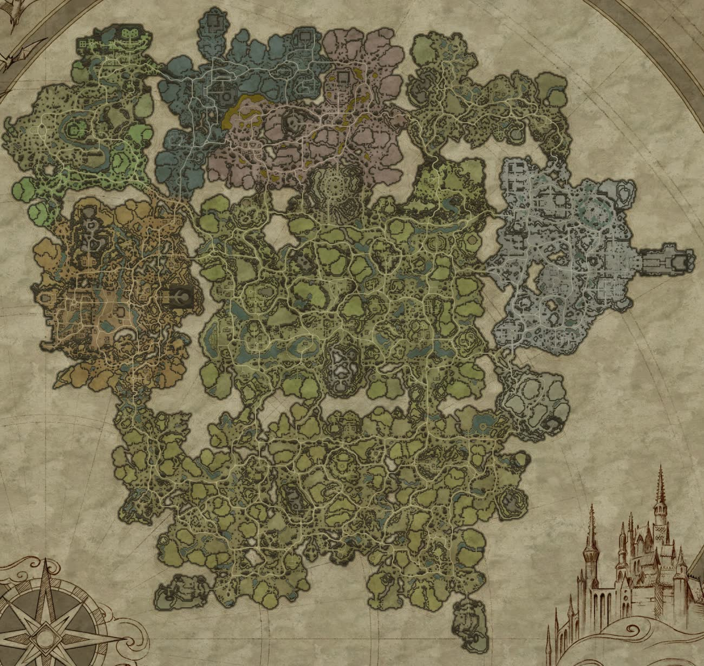
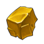
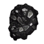
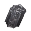
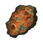
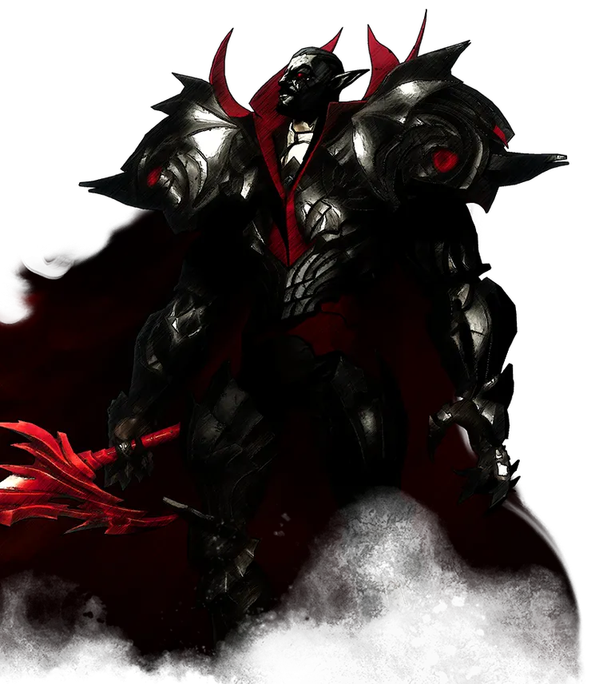

What we added to the world

Resource icons are extra nodes on top of the normal world (589 in total, regrow in 30 minutes). Red areas are FFA zones: the level rule does not protect you there. Orange circles are closed passages to castle plots, teal steps are cave stairs. Golden chests are gladiator chests (19:00 and 23:00 MSK). The red skull is the world boss arena, the coins are the traders castle, the crystal is skull cleansing. Click the map to open it full screen.
All resource spots (33)
- 1EmeryVenom Blades Bastion · FFA
- 2EmeryVenom Blades Bastion · FFA
- 3Tech ScrapTrancendum Power Plant · FFA
- 4Emery, Corrupted Oak, CoalCarvers Logging Outpost · FFA
- 5Highland Lotus, Corrupted Flower, ThistleVenom Mixing Outpost
- 6Tech ScrapStormdrain Hills · FFA
- 7

SulfurPools of Rebirth · FFA - 8SulfurTrancendum Mine · FFA
- 9Tech ScrapThunderstrike Peak · FFA
- 10Silkworm cocoons (silk)Spider Cave · FFA
- 11Ghost ShroomWitch Hut
- 12Ghost Crystal, Ghost ShroomCursed Village · FFA
- 13Ghost CrystalAncient Village
- 14Blood CrystalDracula's Demise · FFA
- 15

Silver OreSacred Silver Mine · FFA - 16Silver OreHarpy Nest · FFA
- 17QuartzQuartz Quarry
- 18

Iron Ore, QuartzBedrock Pass - 19Iron OreIron Cave · FFA
- 20SulfurBastion of Dunley
- 21Mourning LilyFarm
- 22Sacred GrapesBrighthaven Vineyards
- 23Bleeding HeartDracula’s Castle Garden · FFA
- 24Sacred GrapesBrighthaven Vineyards
- 25Snow Flower, Fire BlossomFarm
- 26Iron OreHaunted Iron Mine
- 27Hell's Clarion, Blood RoseFarm
- 28Cotton, SunflowerFarm
- 29SulfurBandit Stronghold
- 30SulfurBandit Sulphur Quarry
- 31

Copper OreBandit Copper Quarry - 32Copper OreBandit Copper Mine
- 33Copper OreBandit Copper Camp
Matryoshka PVP
Scheduled castles and raids, a world boss, carriages, gladiator chests and our own economy. A new world every wipe — everyone starts from zero.
In the server list — [RU] Matryoshka PVP | 2.6 | Solo/Duo | Mod. Russian community, English speakers welcome.

The world opens step by step
A locked boss stands as a “shadow” and does not attack; locked crafting does not start.
Play — earn — spend
The server currency is Primal Stygian Shards. They go to your personal account; take them whenever you like: .bank — balance, .bank take — to your inventory.
What gives shards
Everything below lands on your account or in your hands — no extra commands.
Traders' City
Teleport from any waypoint: on the map — the waypoint icon above the world boss arena. Inside the city is a safe zone — nobody can attack.
More loot: supply carriages and gladiator chests — see “Events” below.
What happens and when
Supply carriages
T1 Farbane, lvl 1–30 · T2 Dunley, 30–50 · T3 Gloomrot, 50–70 · T4 Mortium, 80+ (guards 91). Break a carriage — a chest drops; the loot goes to whoever takes it.
Special horse
Slow, and the rider is wrapped in cursed fog. Bring it to your castle plot; others can take it from you on the way.
World boss
A random one of 38 V Blood bosses, level 90, 12,000 health. The arena is next to the traders castle; it stays for 30 minutes.
Gladiator chests
First to open it takes it.
What the normal game doesn't have
PvE and PvP — two loadouts, one gesture
Save two loadouts — 2 spells, ultimate and dash: .lo save pve and .lo save pvp. Switch with the “Surrender” emote (white flag) in the emote wheel: no animation, instant. Or .lo pve / .lo pvp. Weapons and passives are not touched.
Slashers from Quincey
The Slashers recipe is unlocked by the blood of Quincey the Bandit King — no need to wait for Jakira. Right after him — in your forge.
A castle in the first minute
The journal up to the Castle Heart is already done. The whole map and all waypoints are unlocked — straight to business.
Ben's cloak
Drink the blood of Ben the Old Wanderer — the cursed fog no longer affects you. One clanmate's blood protects the whole clan.
Bound to the castle
Your own — for the owner of the research table and for anyone who personally beat 70% of the tier's bosses. Learned on someone else's table — they work while you are in the owner's clan.
Solo bonus +10%
Playing without a clanmate online — 10% more resource yield. Check with .solo.
Chests work for you
.stash sorts your bag into chests, .pull takes out what you need, and with .l cr a right click on a recipe pulls the ingredients.
Bank and traders
Primal shards build up in .bank over play time and for V Blood. Your first login of the day gives Radiant Fibre (.daily): blood-bound, never dropped on death. 7 fibres buy a shattered golden (artifact) weapon of your choice at the traders castle. In-game traders have three times the stock and restock every 5 minutes.
Rules of combat
Every day 20:00–22:00 MSK
First window — Sat, Oct 10 at 20:00. Outside the window castles cannot be damaged. The heart — only while decaying; a siege golem's spawn is shown on the map. A third player at someone else's siege is a spectator: invisible, can't touch anything.
No raids while you're away
If by 20:00 your whole clan has been offline for 15 minutes or more, your castle cannot be raided that evening. Someone from the clan logs in — the protection is gone.
Don't kill the weak
Level gap of no more than 10 levels (gear 80+ — 5); the highest level in the clan counts. Hits are not blocked, but a kill that breaks the rule means a red line in chat for everyone and a warning to the killer.
Not a violation: the lower player attacked first · revenge within 15 min · top-10 killers · a shard carrier · your own plot · an FFA zone. .lvl Name
Red areas on the map
Around the extra resources. The level rule does not apply there. On entry — “PVP ZONE” and a red glow. Fighting a V Blood — others can't reach you (40 m) unless you fought a player just before.
Bounty
10 vampire kills in a row — you get the skull and everyone sees you on the map as a white skull. Kill a skull bearer — 500 Primal shards. The bearer cleanses at the point (a church icon on the map, 35 s) — 250. Dies — the skull is gone. .wanted
In short
PvP always on · enemy chests can be looted, anyone can search a body · gear is blood-bound · no teleporting with restricted resources · the whole map and all waypoints are unlocked · sun ×0.5 · in-game traders: stock ×3, restock every 5 minutes · solo bonus +10% yield.
Player commands
Typed into the game chat, starting with a dot. Replies are in English.
Currency and rewards
.bank.bank take [amount].pointsalso .witchdust.daily.kitonce, newcomers onlyPvP and bounty
.lvl [player].wanted.lb [page | name]also .kf.castle <player>Loadouts and progress
.loalso .loadout.passives.soloUseful
.pingalso .p.players.serverfpsalso .sfps.help [command]Castle logistics
.stashSort your bag into the chests of your territory..pull <item> [amount]Take an item from the chests of your territory..finditem <item>Which chest holds an item..findchest <name>Find a chest by name..l ssOn/off: double-clicking “Sort” spreads items across chests..l crOn/off: right-clicking a recipe pulls the missing ingredients..l dplOn/off: never take the last item out of a chest..l asmOn/off: servant mission loot is stashed automatically..l coOn/off: “conveyor” — sender and receiver chests..l salOn/off: salvage items put into a chest named salvage..l sp / .l sshNo messages about where items were taken from or put..l sYour logistics settings.